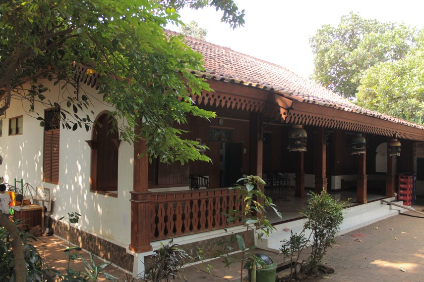

Rumah adat adalah rumah khas dari masing-masing suku bangsa di Indonesia. Tentunya hal ini memberikan perbedaan bentuk, penggunaan bahan, hingga fungsi di masing-masing suku. Mayoritas rumah adat di Indonesia berbentuk rumah panggung. Tujuannya untuk menghindari banjir dan binatang buas pada masa dulu. Sebab, pemukiman warga pada masa dulu belum tertata seperti kompleks perumahan seperti masa kini, sehingga masih rawan dengan bencana dan binatang buas. Selain itu, biasanya rumah ada berbentuk tertutup. Hal ini bertujuan untuk memberikan kehangatan alami ketika menghadapi cuaca dingin. Mengingat, pemukiman warga pada masa dulu cukup banyak berada di daerah pegunungan atau kaki gunung yang relatif dingin. Untuk penggunaan bahan, rumah adat menggunakan bahan-bahan dari alam, seperti kayu, bambu, tanah liat, batu alam, rumbia, hingga pelepah pohon. Sebab, semen dan batu bata belum ada pada masa dulu. Dari berbagai gambaran ini dapat disimpulkan bahwa rumah adat di Indonesia tidak hanya mengandung unsur adat dan budaya sesuai identitas masing-masing suku, namun juga memiliki fungsi sesuai kondisi dan hasil alam Indonesia. Sementara secara fungsi, rumah adat digunakan untuk tempat tinggal sampai berbagai acara adat penting sesuai kepercayaan masing-masing suku.
Salah satu rumah adat Jakarta yang terkenal dengan keunikannya adalah rumah khas Betawi, yang disebut dengan rumah Kebaya atau rumah Bapang Rumah Kebaya sebenarnya tidak asing lagi karena sering tampil pada berbagai acara televisi yang mengangkat cerita tentang kebudayaan Betawi. Salah satu keunikan dari rumah Betawi adalah memiliki serambi yang luas atau bisa dikatakan sebagai area teras untuk menerima tamu dan sekedar tempat berkumpul keluarga. Sedangkan bagian atap rumah ini berbentuk bujur sangkar, dengan desain mirip pelana. Rumah ini juga memiliki 3 buah anak tangga sebagai pintu masuk utama di depan rumah. Biasanya, bangunan rumah Betawi menggunakan bahan baku dari kayu kecapi atau kayu gowok, yang berdiri di atas pondasi dari batu alam. Sedangkan dinding rumah berasal dari anyaman bambu atau campuran antara tembok dan anyaman bambu. Nah, yang menjadi ciri khas dari rumah Betawi adalah warna cat dinding yang menggunakan warna-warna primer, seperti merah, hijau, dan kuning.
Jika mendengar tentang rumah adat Joglo, pasti identik dengan rumah adat dari jawa tengah Namun, di Jakarta juga memiliki rumah adat Joglo khasnya sendiri, loh. Perbedaan rumah adat Joglo yang ada di Jawa Tengah dan Jakarta terletak pada tiang-tiang di area rumah. Di Jawa Tengah, terdapat tiang yang berguna untuk menjadi sekat pemisah antar ruangan, sedangkan di Jakarta tidak menggunakan tiang. Dulunya, bagian atap rumah terbuat dari serabut. Namun, ekarang sudah diganti dengan menggunakan genteng dari tanah liat.Rumah Joglo sendiri menggunakan kayu berkualitas tinggi dan memiliki daya tahan yang baik, seperti kayu jati. Pada zaman dahulu, rumah adat Joglo khas Betawi ini hanya didiami oleh kaum priyayi atau bangsawan.

Rumah adat Jakarta lainnya adalah rumah Gudang. Rumah yang bebentuk persegi panjang yang memanjang ke arah belakang terlihat seperti sebuah gudang. Rumah adat satu ini memang terinspirasi dari gudang milik Portugis di zaman penjajahan. Meski bentuk bangunannya sederhana, tetapi atap rumah tetap memiliki ciri khas bangunana rumah Betawi, yaitu berbentuk pelana atau perisai seperti rumah Kebaya. Rumah Gudang juga memiliki serambi untuk menerima tamu, yang terlindung dari hujan dan matahari oleh atap kecil yang bernama markis.
Sebenarnya, mayoritas wilayah di Indonesia pasti memiliki rumah panggung dengan ciri khas daerahnya sendiri. Sama halnya dengan Jakarta, provinsi dengan suku Betawi ini juga memiliki rumah adat berbentuk panggung. Rumah panggung khas Jakarta terletak di daerah pesisir dengan tujuan menghindari pasang air laut. Biasanya, rumah panggung ini berbentuk persegi yang memanjang ke arah belakang. Jenis kayu yang sering digunakan adalah kayu nangka, kecapi, rumbia, jati, ataupun bambu. Sedangkan area atap, menggunakan bahan atap dari tanah liat. Ciri khas dari rumah panggung ini terletak dari ukiran motif khas yang berbentuk ketupat, setengah lingkaran, titik, atau segi empat. Tidak hanya sebagai hiasan, ukiran ini juga berfungsi sebagai ventilasi udara, loh.
sumbernyadari sini
| Nama Lengkap | : | Nawfanda Lutfy |
| NIM | : | 11210251000030 |